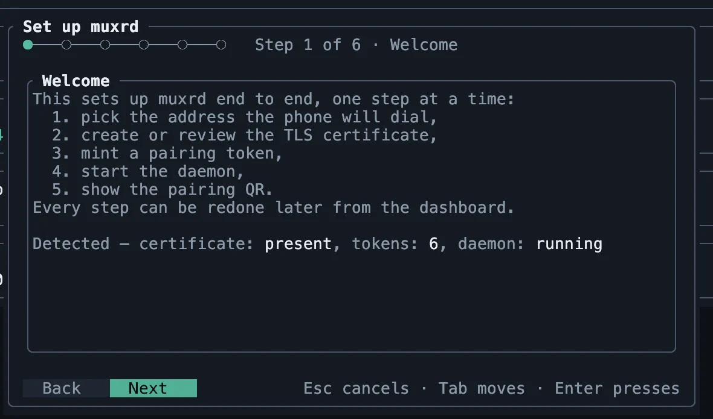
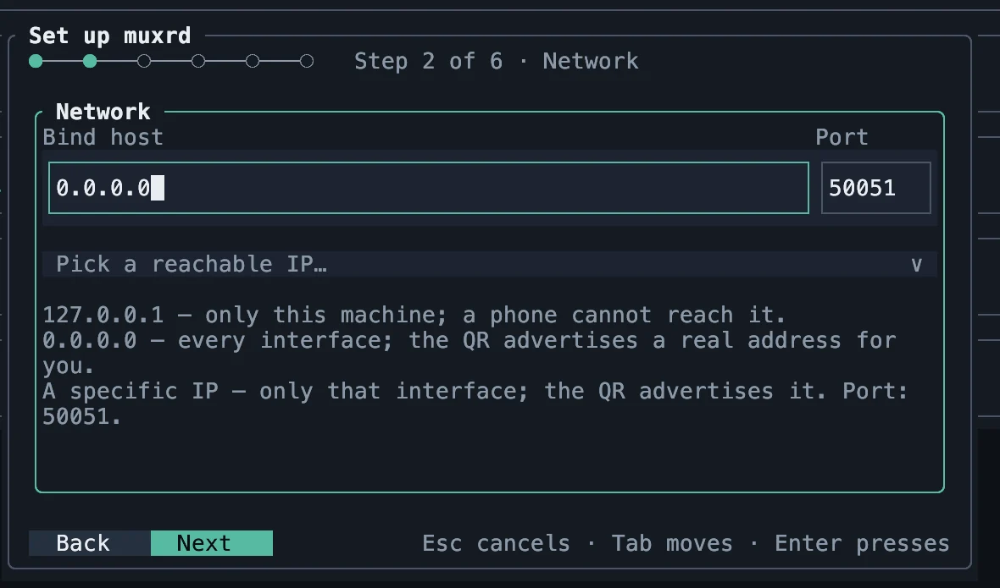
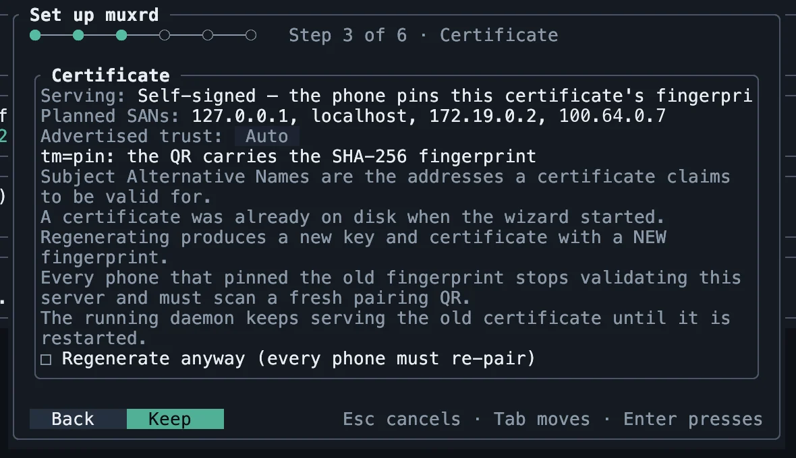
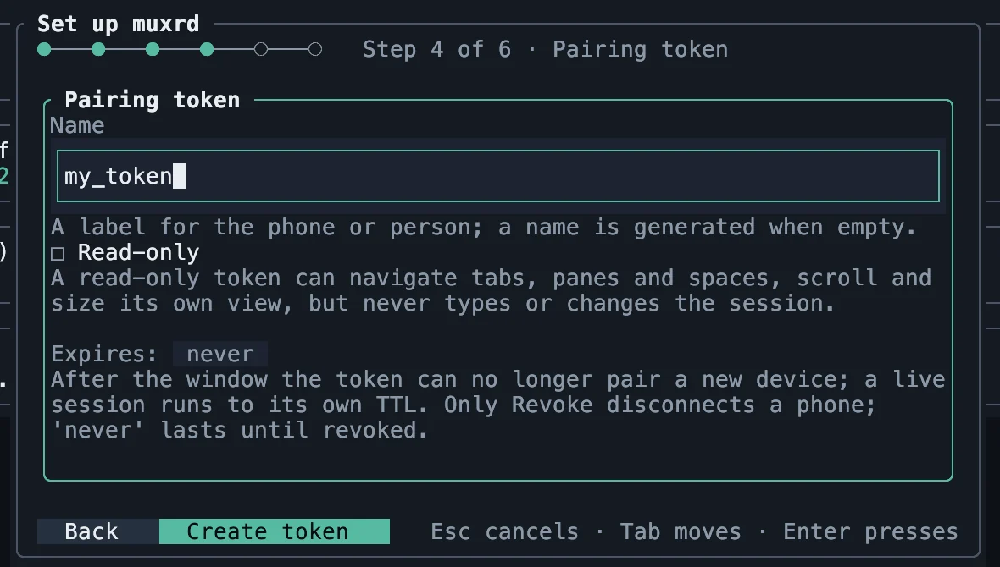
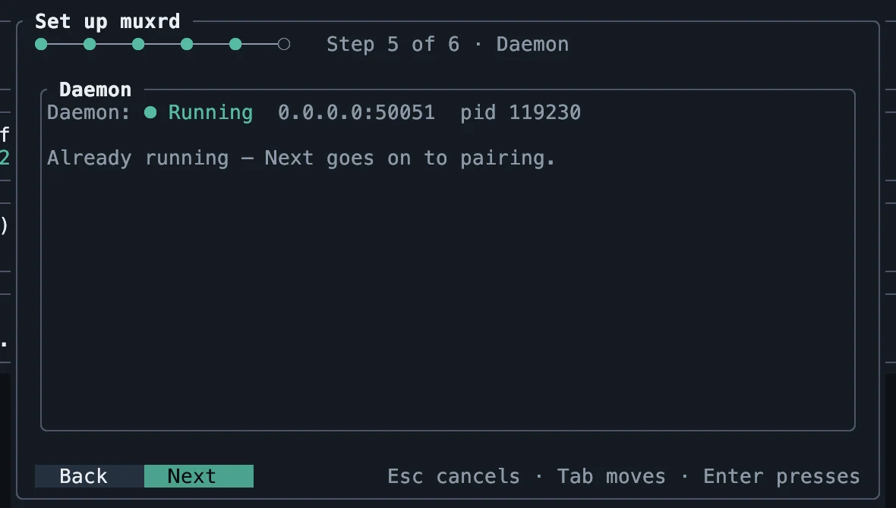
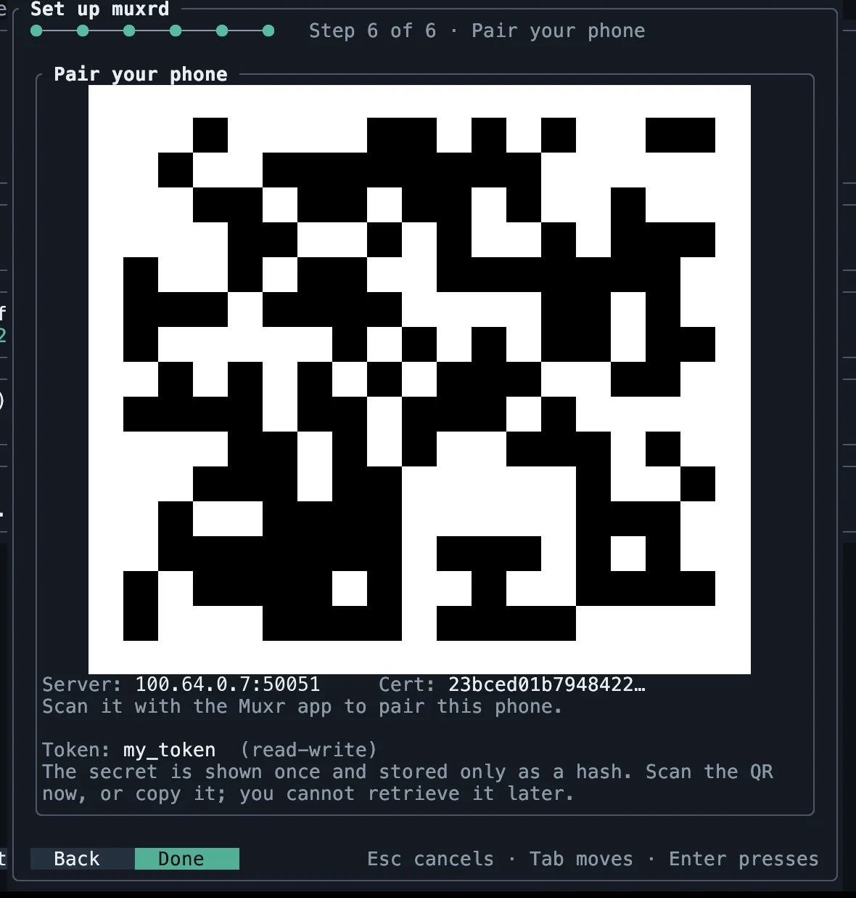

Quick Start
Five steps from a bare server to a terminal on your phone.
1. Get the app
Install Muxr on your phone or tablet.

2. Install the server
Run this on the machine whose sessions you want to reach:
curl -fsSL https://raw.githubusercontent.com/f0x-it-llc/muxr-core/main/install.sh | bashIt installs muxrd, the server, and muxrctl, its setup TUI.
Prerequisite: zellij 0.45.1 (muxrd refuses a mismatched version) or herdr on the server.
3. Reach it over a tailnet
- Install Tailscale on the server and on your phone.
- Sign both into the same tailnet (
sudo tailscale upon a Linux server). - Note the server's
100.x.y.zaddress:tailscale ip -4.
Disable key expiry for an always-on server in the Tailscale admin console, or it drops off the tailnet.
Using a LAN or a public domain instead? Follow Advanced setup for that step, then come back for step 4.
4. Run muxrctl
Run muxrctl on the server, over SSH if it is headless. The setup wizard opens on first run; press w on the dashboard to reopen it later.






5. Scan the QR
- Open the Muxr app.
- Tap the QR scan button on the Connect screen.
- Point the camera at the code in
muxrctl.
The token secret is shown once and kept only as a hash, so scan before you press Done; if you miss it, revoke the token and mint a new one.
Can't scan? On the Connect screen, enter the server address with its port (100.x.y.z:50051) and paste the token. Only the QR carries a self-signed certificate's fingerprint, so a manual connection to such a server needs Trust anyway, which is for development only.
Next: Using the app, or Advanced setup for the dashboard, the CLI, LAN, a public domain and the Docker rig.